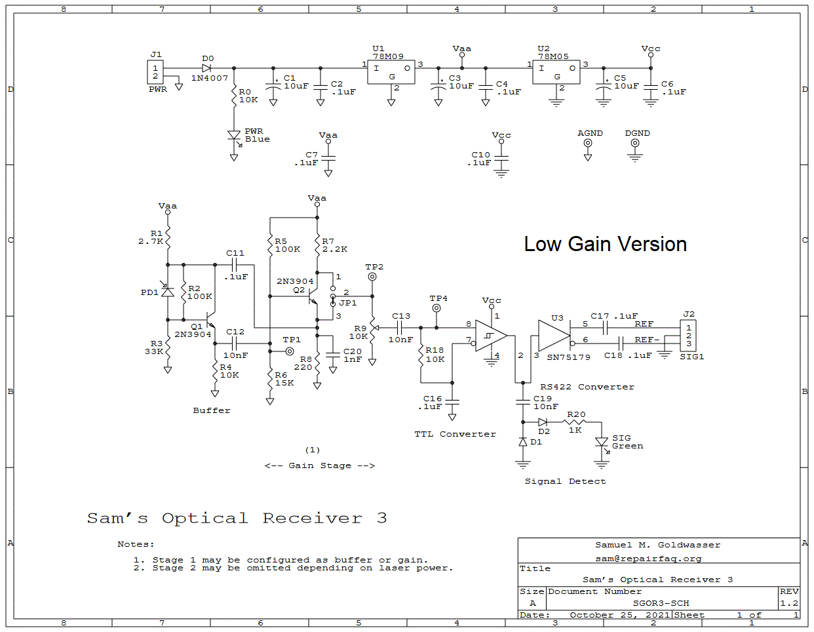
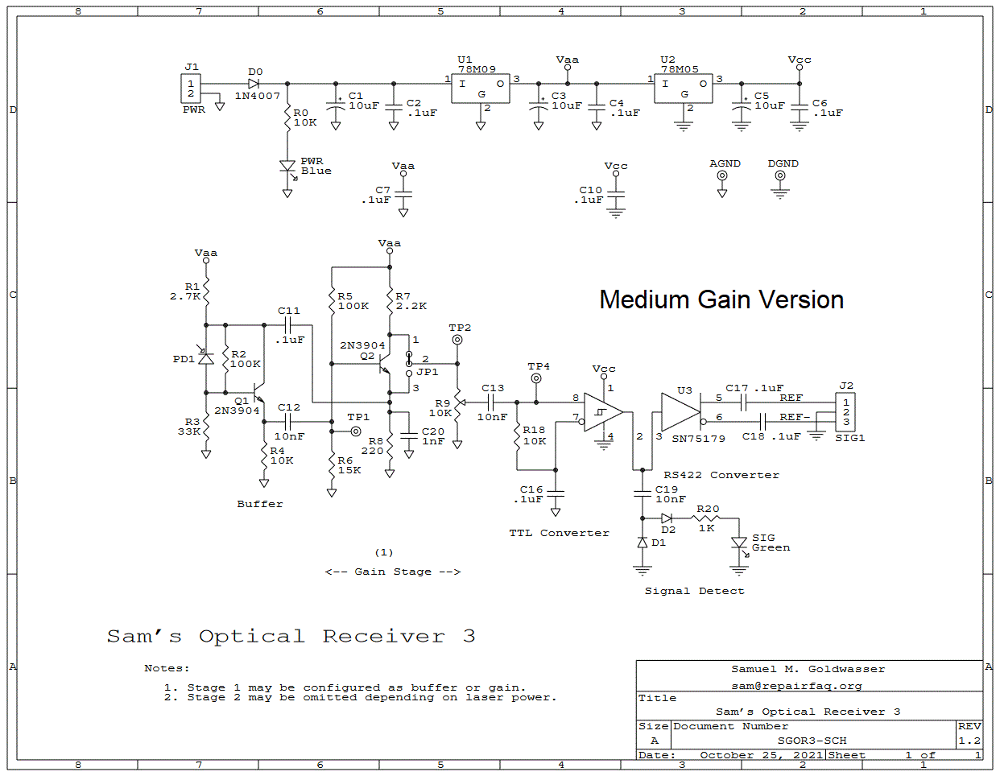
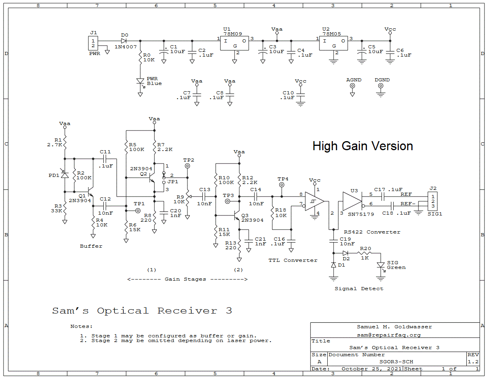

OR3: Low Gain Schematic
OR3 Low Gain Component Locations
.

OR3: Medium Gain Schematic
OR3 Medium Gain Component Locations
.
This is the same as the default schematic except for the jumper. It can also be set up similar to the medium gain version by jumpering the lower pins of JP1.

OR3: High Gain Schematic